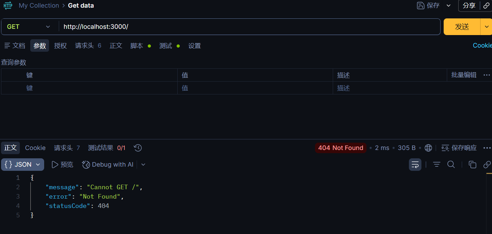
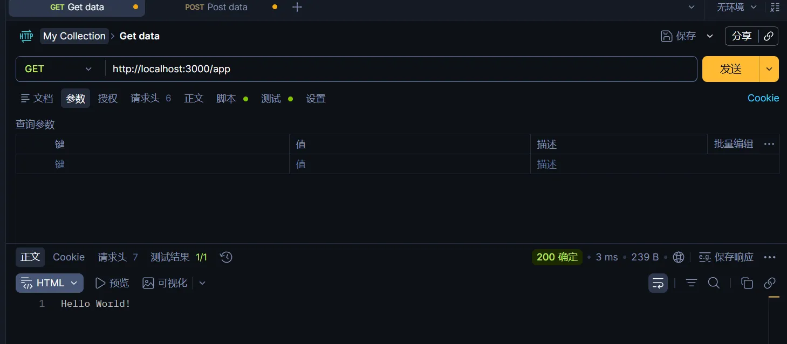

LocalMind 开发日志 02
LocalMind 开发日志 02
2026-6-21
后端学习&开发
创建 Nest.js 应用
src
├── app.controller.spec.ts
├── app.controller.ts
├── app.module.ts
├── app.service.ts
├── main.ts| app.controller.ts | 单个路由控制器 |
|---|---|
| app.controller.spec.ts | 单个路由的单元测试 |
| app.module.ts | 应用的根模块 |
| app.service.ts | 具有单一方法的基本服务 service |
| main.ts | 程序的入口文件，使用核心函数 NestFactory 创建 Nest 应用实例 |
main.ts
import { NestFactory } from "@nestjs/core"; //引入 NestFactory
import { AppModule } from "./app.module"; //引入模块
//创建异步 booststrap 函数
async function bootstrap() {
const app = await NestFactory.create(AppModule); //使用 NestFactory 创建Nest应用实例
await app.listen(3000); //端口3000
}
bootstrap();使用 Nest.js 的工厂函数 NestFactor 创建一个 AppModule 实例
app.module.ts
import { Module } from "@nestjs/common";
import { AppController } from "./app.controller";
import { AppService } from "./app.service";
@Module({
imports: [],
controllers: [AppController],
providers: [AppService],
})
export class AppModule {}@Module 装饰器接受四个属性：import、controllers、providers、export
- providers：Nest.js 注入实例化的提供者，处理具体业务逻辑，各个模块之间可以共享
- controllers：处理 http 请求，包括动态路由，像客户端返回响应，将业务逻辑交给 providers 处理
- import：导入模块的列表，如果有其他需要的模块，可以在这里导入
- export：导出模块的列表，如果有需要导出模块供其他模板使用，可以在这里导出
app.controller.ts
import { Controller, Get } from "@nestjs/common";
import { AppService } from "./app.service";
@Controller()
export class AppController {
constructor(private readonly appService: AppService) {}
@Get()
getHello(): string {
return this.appService.getHello();
}
}使用 @controller 装饰器定义控制器，@Get 是请求方法的控制器，对 getHello 方法进行修饰，表示这个方法会被 GET 请求调用
app.service.ts
import { Injectable } from "@nestjs/common";
@Injectable()
export class AppService {
getHello(): string {
return "Hello World!";
}
}使用 @Injectable 修饰后的 AppService 在 AppServe 中注册后，在 app.controllers.ts 中使用不再需要使用 new AppService 进行实例化，便可直接应用
路由装饰器
@Controller
import { Controller, Get } from "@nestjs/common";
import { AppService } from "./app.service";
@Controller("app") //将这里修改为 "app" 主路径为 app
export class AppController {
constructor(private readonly appService: AppService) {}
@Get()
getHello(): string {
return this.appService.getHello();
}
}此时，访问 https://localhost:3000/ 会出现 404
因为 @controller 控制器的路由前缀为“app”，此时可以通过 https://localhost:3000/app 来访问


HTTP 方法的处理装饰器
@Get、@Post、@Put 等众多用于HTTP方法处理装饰器，经过它们装饰的方法，可以对相应的HTTP请求进行响应。同时它们可以接受一个字符串或一个字符串数组作为参数，这里的字符串可以是固定的路径，也可以是通配符。
修改 app.controller.ts
import { Controller, Get, Post, Put, Param } from "@nestjs/common";
import { AppService } from "./app.service";
@Controller("app")
export class AppController {
constructor(private readonly appService: AppService) {}
/**
* 获取列表
* GET /app/list
*/
@Get("list")
getHello(): string {
return this.appService.getHello();
}
/**
* 创建资源
* POST /app/list
*/
@Post("list")
createList(): string {
return "createList";
}
/**
* 匹配 /app/user_xxx 格式路径
* 示例: /app/user_123 -> xxx = '123'
*/
@Get("user_:xxx")
getUser_xxx(@Param("xxx") xxx: string): string {
return `getUser ${xxx}`;
}
/**
* 匹配 /app/user/xxx 多级路径（通配符）
* 示例:
* /app/user/profile -> path = 'profile'
* /app/user/a/b/c -> path = 'a/b/c'
*/
@Get("user/*path")
getUser(@Param("path") path: string): string {
return `getUser 路径：${path}`;
}
/**
* 更新资源
* PUT /app/list/:id
*/
@Put("list/:id")
update(@Param("id") id: string) {
return `update ${id}`;
}
/**
* 根据ID获取资源
* GET /app/list/:id
*/
@Get("list/:id")
getById(@Param("id") id: string) {
return `get list id=${id}`;
}
}新的改动：
- 移除带括号 (.) 正则路径写法，不使用正则格式路由装饰器
风险：路由中 (.) 这类括号正则语法会触发 path-to-regexp 抛出 PathError 路径解析错误；同时正则路由存在 TS 类型推导异常、多版本 Nest 兼容差的问题。
规范要求：所有路由全部采用 NestJS 原生标准语法，不再自定义正则表达式配置路由，彻底规避运行时报错、类型缺失等兼容问题。 - 路由 user*:xxx(.*) 调整为 user*:xxx
匹配规则：路由段为完整一段，无路径分隔符 /，可匹配 /app/user*11111、/app/user_admin 等地址。
参数捕获逻辑：自动捕获当前路径段内下划线 * 后方全部内容赋值给参数 xxx，匹配边界为下一个 /，一旦遇到斜杠则停止捕获。
请求示例：访问 GET /app/user_11111，@Param("xxx") 获取到的值为 11111。 - 多级捕获路由 user/:path(.) 替换为标准通配符 user/path
功能效果：使用官方 * 通配符完整捕获 /user/ 之后所有层级路径，支持单级、多级嵌套路径。
请求示例 1：访问 /app/user/foo，path 参数值为 foo；
请求示例 2：访问 /app/user/a/b/c，path 参数值为 a/b/c；
获取方式：通过 @Param("path") 完整接收斜杠后的整条路径字符串，适用于文件路径、多级资源路径场景。 - 规范路由定义顺序，精确路由前置，通配路由后置
Nest 匹配逻辑：控制器内路由从上至下依次匹配，先定义的路由优先级更高。
风险点：若宽泛通配路由写在精准路由上方，会优先拦截请求，下方精确路由无法被命中，接口返回 404。
编码标准：高精准匹配路由（如 user_:xxx）必须写在通配模糊路由（如 user/*path）前面。
数据库
- 新建数据库
CREATE DATABASE localmind- 修改 .env 文件
- 数据库设计
- users 存用户账号与基础信息
- id — INT AUTO_INCREMENT 主键
- email — VARCHAR(255)
- password_hash — VARCHAR(255)
- name — VARCHAR(255)
- is_active — BOOLEAN
- created_at — TIMESTAMP DEFAULT CURRENT_TIMESTAMP
- updated_at — TIMESTAMP ON UPDATE CURRENT_TIMESTAMP
- items 主业务逻辑（笔记/文章/条目）
- id 主键
- owner_id -> user.id NOT NULL
- title — VARCHAR(255)
- content — JSON
- created_at — TIMESTAMP DEFAULT CURRENT_TIMESTAMP
- updated_at — TIMESTAMP ON UPDATE CURRENT_TIMESTAMP
- tags 标签目录
- id — 主键
- name — VARCHAR(100)，NOT NULL，UNIQUE
- slug — VARCHAR(120)
- created_at — TIMESTAMP
- item_tags （item 与 tag 多对多关联）
- id — 主键
- name — VARCHAR(100)，NOT NULL，UNIQUE
- slug — VARCHAR(120)
- created_at — TIMESTAMP DEFAULT CURRENT_TIMESTAMP
- attachments 文件/附件元数据
- sessions 可撤销的登录会话
- id — 主键
- user_id — FK -> users.id
- token_hash — VARCHAR(255) hash
- expires_at — TIMESTAMP
- revoked_at — TIMESTAMP NULLABLE
- created_at — TIMESTAMP
- MySQL 语句
- user 表
CREATE TABLE users(
id INT AUTO_INCREMENT PRIMARY KEY,
email VARCHAR(255) NOT NULL UNIQUE,
password_hash VARCHAR(255) NOT NULL,
name VARCHAR(100),
is_active BOOLEAN DEFAULT 1,
created_at TIMESTAMP DEFAULT CURRENT_TIMESTAMP,
updated_at TIMESTAMP DEFAULT CURRENT_TIMESTAMP ON UPDATE CURRENT_TIMESTAMP
) CHARSET = utf8mb4;- items 表
CREATE TABLE items(
id INT AUTO_INCREMENT PRIMARY KEY,
owner_id INT NOT NULL,
title VARCHAR(255) NOT NULL,
content JSON,
created_at TIMESTAMP DEFAULT CURRENT_TIMESTAMP,
updated_at TIMESTAMP DEFAULT CURRENT_TIMESTAMP ON UPDATE CURRENT_TIMESTAMP,
FOREIGN KEY(owner_id)
REFERENCES users(id)
ON DELETE CASCADE
) CHARSET = utf8mb4;- tags 表
CREATE TABLE tags(
id INT AUTO_INCREMENT PRIMARY KEY,
name VARCHAR(100) NOT NULL UNIQUE,
slug VARCHAR(120) UNIQUE,
created_at TIMESTAMP DEFAULT CURRENT_TIMESTAMP
) CHARSET = utf8mb4;- item_tags 表
CREATE TABLE item_tags(
item_id INT NOT NULL,
tag_id INT NOT NULL,
created_at TIMESTAMP DEFAULT CURRENT_TIMESTAMP,
PRIMARY KEY(item_id,tag_id),
INDEX idx_tag_id(tag_id),
FOREIGN KEY(item_id)
REFERENCES items(id)
ON DELETE CASCADE,
FOREIGN KEY(tag_id)
REFERENCES tags(id)
ON DELETE CASCADE
) CHARSET = utf8mb4;- attachments 表
CREATE TABLE attachments(
id INT AUTO_INCREMENT PRIMARY KEY,
owner_id INT NOT NULL,
item_id INT,
storage_key VARCHAR(512) NOT NULL,
url VARCHAR(1024),
mime_type VARCHAR(100),
size BIGINT,
created_at TIMESTAMP DEFAULT CURRENT_TIMESTAMP,
INDEX idx_owner_id(owner_id),
INDEX idx_item_id(item_id),
FOREIGN KEY(item_id)
REFERENCES items(id)
ON DELETE CASCADE,
FOREIGN KEY(owner_id)
REFERENCES users(id)
ON DELETE CASCADE
) CHARSET = utf8mb4;- sessions 表
CREATE TABLE sessions(
id INT AUTO_INCREMENT PRIMARY KEY,
user_id INT NOT NULL,
token_hash VARCHAR(255) UNIQUE,
expires_at TIMESTAMP,
revoked_at TIMESTAMP,
created_at TIMESTAMP DEFAULT CURRENT_TIMESTAMP,
INDEX idx_user_id(user_id),
FOREIGN KEY(user_id)
REFERENCES users(id)
ON DELETE CASCADE
) CHARSET = utf8mb4;本博客所有文章除特别声明外，均采用 CC BY-NC-SA 4.0 许可协议。转载请注明来源 Felix's Blog！